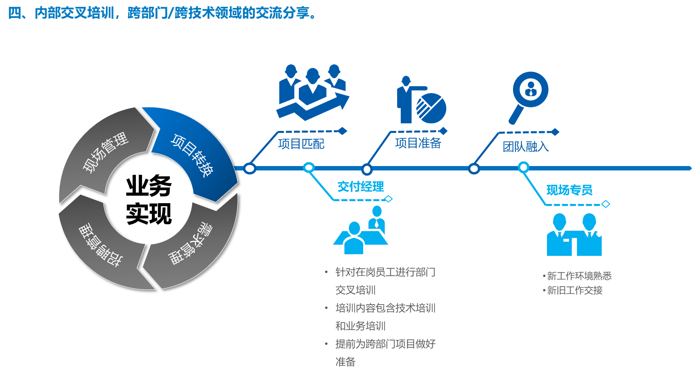

01
企业信息化咨询与实施
结合业务流程与技术架构，推进企业信息化规划、系统建设与持续优化。
02 关于三加七
三加七科技是甲上集团独立的 ITO 公司，提供企业信息化咨询与实施、软件开发和技术人才外包服务，立足浙江、面向全国。
团队以“云+网+端”一体化服务承接客户的业务与技术需求，并以专业化的人才服务保障项目的稳定推进。
聚焦企业信息技术服务与项目交付。
延展人力外包和企业信息化咨询服务。
持续沉淀数据、研发与项目协同能力。
以数字化与人才服务支持长期客户协作。
03 服务体系
从咨询实施、项目开发到业务及技术外包，服务边界清晰，协作节奏可控。
01
结合业务流程与技术架构，推进企业信息化规划、系统建设与持续优化。
02
覆盖应用研发、移动端、数据、测试及相关工程能力，支持从需求到上线的项目协作。
03
按项目节奏提供专业人才和现场服务，帮助客户灵活配置、稳定扩展团队能力。
技术与岗位覆盖
04 交付能力
以需求、招聘、现场和资源转换四个环节组织服务过程，用可跟踪的交付机制减少协作的不确定性。
明确需求范围、岗位画像与协作目标。
以人才储备、定向招聘和筛选机制快速响应。
围绕项目节奏、技术能力与客户协作持续推进。
支持项目转换、资源回收与后续服务衔接。

05 合作方式
从技术方案、人员匹配到现场协同，三加七以专业分工和明确响应机制支持客户的技术团队长期运转。
06 客户案例
以下案例来自公司介绍资料，展示三加七在不同客户场景中的长期服务范围。
C-01
2018 至今
持续提供技术服务，2021 年晋升为 A 类供应商。
C-02
2022 至今
支持易云相关运维、开发、ETL 与测试服务。
C-03
2023 至今
覆盖研发、嵌入式、硬件、QT 与测试等岗位能力。
C-04
2022 至今
提供研发、Java、前端、安卓、ETL 与运营服务。
C-05
2023 至今
支持产品研发、Java、前端、UX、动画与 3D 等岗位。
07 联系我们
地址 浙江省杭州市拱墅区万达商业中心 B 座 1505–1507 室